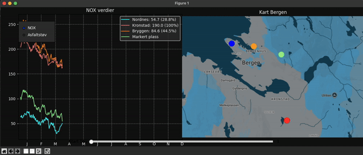

Programbeskrivelse:
Dette programmet er et interaktivt visualiseringsverktøy for å vise NOX-nivåer og asfaltstøvnivåer gjennom et år for tre stasjoner i Bergen: Nordnes, Kronstad og Bryggen. Programmet genererer tilfeldig data for NOX og asfaltstøv og visualiserer dette både som en linjegraf og på et kart over Bergen. Brukeren kan bytte mellom de to datatypene og justere tidsintervallet på grafen ved hjelp av en radioknapp og en skyveknapp.
Bruksanvisning:
1. Velg datatype:
På venstre side av vinduet er det en radioknapp som lar deg velge mellom visning av NOX-verdier og Asfaltstøv-verdier. Klikk på en av valgene for å bytte datatype.
2. Juster tidsintervallet:
Bruk skyveknappen nederst i vinduet for å velge startdagen for en 90-dagersperiode. Dra skyveknappen for å se data fra ulike deler av året.
3. Markér et punkt på kartet:
Klikk på kartet over Bergen for å markere et punkt. Programmet beregner deretter en verdi basert på dataene fra de tre stasjonene (Nordnes, Kronstad og Bryggen) med hensyn til avstanden til det markerte punktet. Dette resultatet vises som en egen kurve i grafen.
4. Les data og legend:
Grafen viser dataene som tre kurver, en for hver stasjon, og en fjerde kurve dersom et punkt på kartet er markert. Legend i grafen viser gjennomsnittlig verdi for hver stasjon samt prosentandel i forhold til Kronstad-stasjonen.
5. Avslutt programmet:
Programmet vil være aktivt og oppdateres i sanntid etter hvert som du gjør endringer. For å avslutte, lukk vinduet.